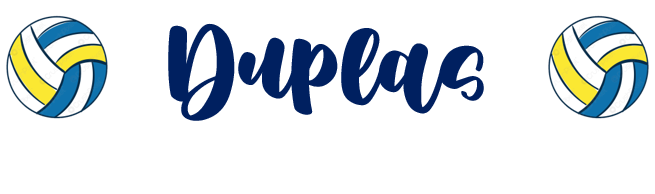
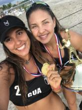
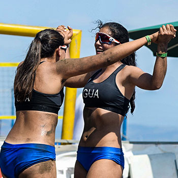
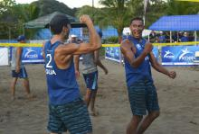

Como reconocimiento a los jugadores de voleibol playa, las duplas más detacadas del momento, son las siguientes:

Natalia Girón y Estefanie Bethancourt:
Con victoria de 21-17 y 21-16 en la final, la dupla nacional conformada por Natalia y Estefanie se proclamaron campeonas en el XVIII Campeonato Centroamericano de Voleibol de Playa que concluyó el fin de semana en el 2016, permaneciendo como uno de los dúos dinámicos del albiceleste.
Girón y Bethancourt derrotaron a la pareja costarricense de Marcela Araya y Eugenia Ramírez y acabaron así con la hegemonía que sostenía este país con siete victorias al hilo en el área. Este es el primer título centroamericano femenino que conquista Guatemala desde 2010.

Paola Alvarado y María Juarez:
Las primeras atletas guatemaltecas clasificaron el fin de semana a los Juegos Olímpicos de la Juventud, Buenos Aires 2018, en la modalidad de voleibol de playa.
Paola Alvarado y María Juárez se convirtieron en campeonas invictas del Torneo Clasificatorio y Primer Campeonato Centroamericano Sub19, que se realizó en Puntarenas, Costa Rica. Con ello, las nacionales aseguraron su pase a la cita juvenil olímpica.

Andy Leonardo y Luis García:
Con victoria de 21-15 y 21-18 en la final, los guatemaltecos Andy Leonardo y Luis García se coronaron campeones del XVI Campeonato Centroamericano Mayor de Voleibol de Playa Masculino, realizado en Ciudad Colón, Costa Rica en 2018.
Mientras, la dupla femenina conformada por las hermanas María José y María Andrea Orellana logró el subcampeonato en el mismo certamen en rama femenina.